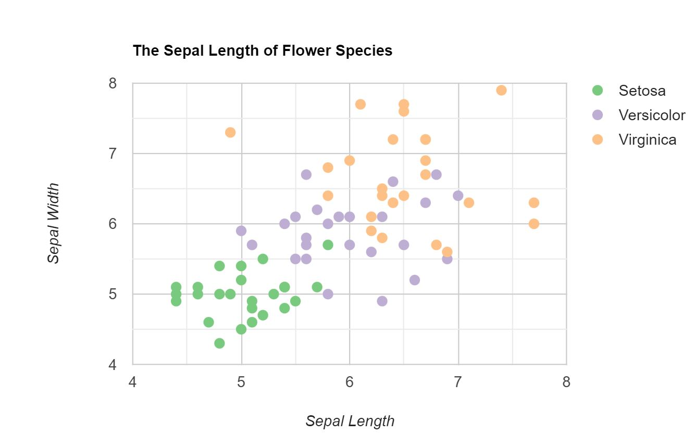

Marks:
- Areas (states, 'electoral votes needed to win' bar)
Channels:
- Color
- Represents whether a state voted for Clinton (Democrat) or Trump (Republican)
- This is good mapping because the color blue is associated with the Democratic party, while red is associated with the Republican party, so the colors make logical sense. Moreover, the red and blue have similar saturation and luminence, but are very different hues, indicating difference but not order.
Colormap(s):
- Categorical
- Represents two different categories with no order: Democrat and Republican.
- This is good mapping because the colors are perceptually different with similar saturation and value.
Marks:
- Points (each point represents a batted ball)
Channels:
- Color
- Represents the scoring value of the batted ball (ranging from below to above average).
- This is good mapping because the colors clearly differ from each other, while still having similar luminance. Furthermore, the colors differ in saturation depending on how far from the average it is, which is effective as we perceive increased saturation as "more".
- Position
- Represents the launch angle and exit velocity of the batted ball.
- This is good mapping because it is easy to see at what velocities and angles a ball has a higher/lower scoring value. It is clear that balls batted at an angle between 20 and 40 degrees and an exit velocity of over 90mph are likely to be homeruns.
Colormap(s):
- Divergent
- Represents two extremes of the scoring value range.
- This is good mapping because the neutral color (white) indicates "average" aka the midpoint of the range, with contrasting hues for below and above average. The saturation for the above average scoring values is higher than that of the below average scoring values - this is effective since it draws the viewer's attention to concentrations of balls with an above average scoring value which is likely more of interest.
Marks:
- Points (represents a sepal length and a sepal height of a flower of particular species)
Channels:
- Color
- Represents the three different flower species that are included in this graph which are Setosa, Versicolor, and Virginica
- This is a good mapping because the colors focus more on the different hues since it is categorical data which better represents identity channels.
- Position (Both horizontal and vertical)
- Represents the Sepal length and Sepal width of a particular flower of a species
- This is a good mapping since we can see what position they are placed on the graph. Additionally, we can see how the length and width may differ from different species. For example, Setosa has smaller sepal lengths and sepal widths compared to Virginica which has higher sepal lengths and sepal widths.
Colormap(s):
- Categorical
- Represents three different categories with no order: Setosa, Versicolor, and Virginica
- This is a good mapping since each color represents a different category which is the flower species. The colors chosen are perceptually distant and roughly have the same saturation and value.